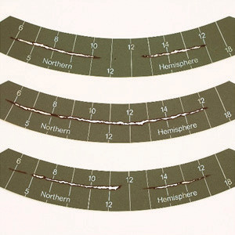

Steps to follow when measuring sunlight
Place the sunshine recorder outside in an open area where sunlight can shine directly on it. Ensure that no trees or buildings block the sunlight from reaching the sunshine recorder.
Make sure the glass sphere is oriented correctly to allow sunlight to pass through.
The sunlight will burn the recording card. This will indicate how long the sun was shining.
Check the card to see the marks. Each mark shows how long the sun has been shining.
The longer the sun shines, the more marks accumulate and become longer on the card.
You can count the marks to see how much sunlight was recorded for that day; see Figure 9.
After finishing the exercise, clean the glass sphere to ensure it works well next time.

Figure 9: Sunshine recording card
Clouds
Clouds are collections of tiny water or ice droplets floating in the atmosphere. Clouds are formed from vapour-laden air caused by evaporation from plants, oceans and various water sources. After the vapour rises into the atmosphere, it meets cold air, which cools it down, leading to the formation of small water droplets in the sky.